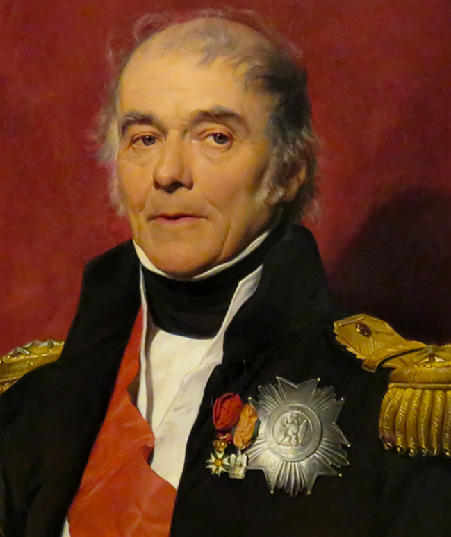
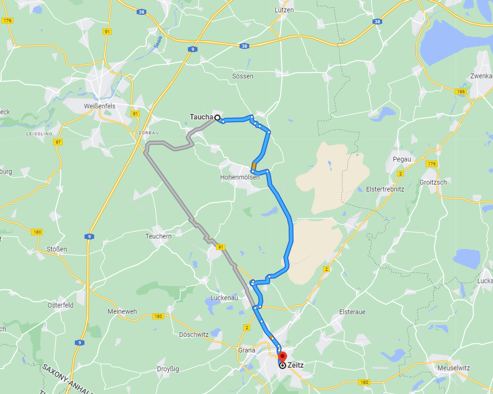
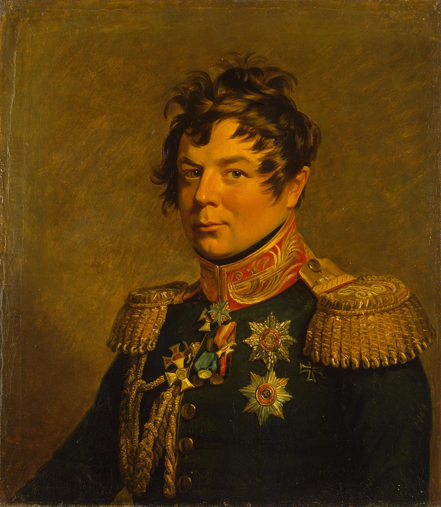
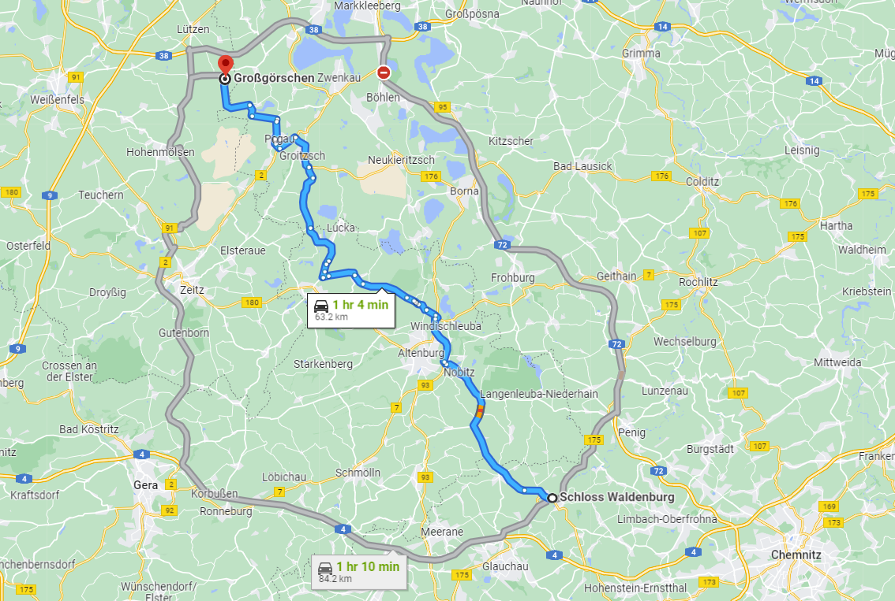

뤼첸 전투 (7) - 오타(?) 하나의 결과
게시: 2022-10-17T09:57:32+09:00
프로이센 사람들이 '이제 예비대만 투입하면 이길 수 있다'라며 아우성칠 때 비트겐슈타인이 반대로 철수를 결심한 것은 물론 나폴레옹의 큰 그림 때문이었습니다. 그 큰 그림 때문에, 격전이 벌어지던 4개 마을에서 남서쪽으로 8km 정도 떨어진 타우차(Taucha) 마을에 강력한 프랑스군이 나타났다는 소식이 비트겐슈타인에게 날아들었습니다. 바로 베르트랑의 제4 군단이었습니다. 원래 라이프치히로 향하던 프랑스군이 일제히 진격 방향으로 바꾸자 원래 후위 부대였던 제4 군단이 이제는 우익이 되어 연합군의 좌익의 측면을 노리게 된 것입니다. 뿐만 아니었습니다. 4개 마을에서 동쪽으로 약 5km 떨어진 그로스쉐콜롭(Großschkorlopp) 마을에도 역시 강력한 프랑스군이 나타났다는 보고가 날아들었습니다. 원래 북서쪽에서 라이프치히로 내려오던 외젠 휘하 막도날의 제11 군단이었습니다.

(베르트랑(Henri Gatien Bertrand) 장군입니다. 나폴레옹보다 4살 어렸던 그는 유복한 부르조와 가정 출신이었고 일찍부터 군문에 들어가기 위해 예비 사관학교를 다니던 중 프랑스 혁명을 맞았습니다. 그는 자원병으로 군에 입대했고, 이집트 원정에 종군하면서 나폴레옹의 눈에 들어 대령으로, 이어서 준장으로 고속 승진했습니다. 1809년 아스페른-에슬링 전투에서 패전의 원인이 되었던 도나우 강의 부교를 지은 총책임자가 베르트랑이었습니다. 물론 그것이 꼭 베르트랑의 책임이라고 볼 수는 없지요. 그는 꽤 훌륭한 지휘관으로서 라이프치히 전투에서 프랑스군이 궤멸을 피할 수 있었던 것은 그의 공로라고 할 수 있었습니다. 그는 끝까지 나폴레옹을 따라 세인트 헬레나 섬까지 갔었고, 나중에 그곳에서 나폴레옹의 유해를 가지고 프랑스로 돌아온 것도 그였습니다. 부인까지 세인트 헬레나 섬에 데리고 갔던 베르트랑은 그 섬에서 네째 아이를 낳았는데 이름을 영국식으로 Arthur라고 지었고, 이 아이는 외로운 섬에서 무료해 하던 나폴레옹의 사랑을 독차지했다고 합니다. 아서는 나중에 명성을 떨치는데, 당대 유명 여배우인 마드모아젤 라쉘(Rachel Félix)과의 염문이었습니다. 마드모아젤 라쉘은 많은 유명인사와 염문을 뿌렸는데, 주로 나폴레옹 관계자의 후손들, 즉 나폴레옹 3세, 그리고 제롬의 아들인 나폴레옹 대공, 또 나폴레옹이 발레프스카 백작 부인과의 사이에서 낳은 서자인 발레프스키 백작 등이 그 대상이었습니다. 그 중에 라쉘과 아이까지 낳은 사람은 발레프스키 백작과 아서 베르트랑 2명이었습니다.) 이쯤 되자 나폴레옹의 의도는 비트겐슈타인에게도 분명해졌습니다. 눈 앞의 4개 마을에서 병사들의 목숨을 갈아넣으며 연합군의 시선을 돌려놓은 사이에 동서 양측에서 집게로 조이듯 연합군을 포위하겠다는 것이었습니다. 아군의 강점을 유리하게 써먹을 수 있고 적의 강점이 최대한 약해지는 상황을 만들어 내는 것이 명장의 자질입니다. 프랑스군의 강점은 보병의 수적 우위였고, 연합군의 강점은 강력한 기병과 포병이었습니다. 그런데 이제 와서 보니 연합군은 기병과 포병이 제대로 위력을 발휘할 수 없는 좁은 4개 마을에 묶여 프랑스군과 멱살을 쥐고 구르고 있었고, 그러는 사이에 프랑스군은 수적 우세를 앞세워 연합군을 크게 포위하고 있었던 것입니다. 비트겐슈타인은 나폴레옹만큼 똑똑하지는 않았지만 그렇다고 바보는 아니었습니다. 그는 상황을 파악하고는 베르크의 러시아 군단을 빼내어 서쪽에서 다가오는 베르트랑 군단을 막도록 했습니다. 그리고 속속 도착하는 러시아 예비군단은 동쪽의 막도날을 막도록 해야 했습니다. 그리고 무엇보다, 이 4개 마을에 전군을 묶어놓아서는 안되겠다고 결심을 굳혔습니다. 이렇게 비트겐슈타인이 나름대로 상황을 정리하는 동안에도, 그야말로 4개 마을 전투에서 젊은 병사들을 갈아넣으며 피투성이가 되어가던 프로이센군은 결정적인 순간에 비트겐슈타인이 베르크 군단을 철수시키고 토르마소프의 예비군단을 일부러 늦게 도착시켰다고 분노를 터뜨렸습니다. 이 오해는 나중에 해명이 되었지만, 이 오해로 벌어진 프로이센-러시아 간의 감정은 한참 뒤까지도 쉽게 아물지 않았습니다. 한편, 베르트랑의 제4 군단도 타우차(Taucha)에서 더 전진하는 것이 꼭 쉽지만은 않았습니다. 타우차 남쪽에 적군의 움직임이 관측되었기 때문이었습니다. 베르트랑이 전체 프랑스군의 최우익이었는데, 여기서 바로 남쪽의 적을 무시하고 동쪽으로 진격했다가는 그 남쪽의 적군이 전체 프랑스군의 우익을 우회하여 후방을 공격할 가능성도 있었습니다. 그러나 오후 3시경 나폴레옹의 '빨리 진격하라'는 긴급 명령이 날아들자 비로소 그 정체불명의 적군을 버려두고 전진했습니다. 베르트랑이 염려하던 이 적군의 정체는 무엇이었을까요? 과연 베르트랑이 우려하던 것처럼 이들이 프랑스군의 우익을 우회하는 사태는 벌어지지 않았을까요?

(타우차와 자이츠 사이의 거리는 대략 20km 정도입니다.) 베르트랑의 눈에 들어왔던 이 부대는 타우차에서 약 20km 남쪽인 자이츠(Zeitz)에 있던 밀로라도비치의 러시아군 선봉대였습니다. 그리고 이들은 베르트랑이 서쪽으로 진격한 이후에도, 그리고 바로 북동쪽 25km 정도 떨어진 4개 마을에서 벌어지는 격렬한 포격 소리에도 불구하고, 놀라울 정도로 아무 일도 하지 않았습니다. 병력이 부족해서였을까요? 처음에는 그랬을 수도 있으나, 오후 4~5시 사이에 밀로라도비치 본인을 포함한 전체 부대가 다 당도하여 1만1천으로 증강된 뒤에도 별 활동이 없었습니다. 밀로라도비치는 뤼첸 인근에서 격렬한 전투가 벌어지고 있으며, 북서쪽 바이센펠스(Weißenfels)에서 프랑스군 지원병력이 그 전투 현장으로 쏟아져 들어가고 있다는 것을 알면서도 정말 신기할 정도로 가만히 있었습니다. 그는 그저 1개 기병여단과 1개 유격병 대대를 북쪽에 파견하여 정찰을 수행했을 뿐, 그날 일지에 '명령을 기다리며 대기했음'이라고만 적었습니다. 대체 밀로라도비치는 왜 그랬을까요? 혹시 자신보다 한참 아래 서열인 비트겐슈타인을 총사령관으로 임명한 것에 앙심을 품고 태업을 한 것이었을까요? 글쎄요, 밀로라도비치의 개인적 감정이 아마 분명히 일정 부분 영향을 끼쳤을 것입니다. 그런데 그건 추정일 뿐이고, 그 진짜 이유에 대해서는 굉장히 색다른 사연이 있었다고 합니다. 먼 훗날인 1830년, 폴란드에 반란이 일어나 그 진압차 프로이센군을 지휘하여 폴란드에 진주한 그나이제나우는 같은 목적으로 폴란드에 진주한 러시아군의 지휘관이 뤼첸 전투 당시 러시아군 지휘관 중 하나였던 디비츠쉬(Hans Karl von Diebitsch)라는 것을 알게 되었습니다. 아마 그나이제나우도 대체 왜 1813년 5월 2일 뤼첸 전투 당시 밀로라도비치가 그런 태업을 저질렀는지 정말 궁금했던 모양이었습니다. 그는 디비츠쉬를 찾아가 잡담을 하다가 그 이유에 대해서 물었습니다. 그에 대한 디비츠쉬의 긴 대답은 정말 의외의 것이었습니다. 바로 서기의 글씨체 때문이었다는 것이었습니다.

(전에 소개해드렸던 디비츠쉬입니다. 그는 매우 젊은 장군으로서 당시 28세에 불과했고, 슐레지엔에서 태어난 프로이센 귀족으로서 교육도 베를린의 사관학교에서 받았습니다만 16살의 나이에 러시아군에 기용되어 계속 러시아군으로 경력을 쌓았습니다. 그가 그나이제나우에게 1830년에 해준 설명은 나름 아슬아슬한 것이었습니다. 디비츠쉬는 바로 다음 해에 콜라라로 사망했거든요.) 비트겐슈타인이 4월 27일 그 말도 많고 탈도 많았던, 지나치게 시시콜콜 장황했던 명령서를 통해 밀로라도비치에게 내린 명령은 나폴레옹이 진격을 시작할 때까지 켐니츠(Chemnitz)에 주둔하고 있다가 나폴레옹의 진격 소식을 접하면 서쪽으로 27km 정도 떨어진 발덴부르크(Waldenburg) 쪽으로 이동하라는 것이었습니다. 그리고 나폴레옹의 진격 소식이 나온 이후 밀로라도치는 발덴부르크 인근인 페니히(Penig)로 이동을 시작했습니다. 그런데 나폴레옹의 진격이 시작된 5월 1일, 비트겐슈타인이 밀로라도비치로부터 마지막으로 받은 보고는 밀로라도비치의 부대가 발덴부르크에 있다는 것이었습니다. 발덴부르크에서 전투 현장인 그로스괴르쉔까지의 거리는 60km가 넘었으므로 아무리 강행군을 해도 2일이 걸리는 거리였습니다. 그래서 비트겐슈타인은 밀로라도비치의 부대는 도저히 제 시간에 전투 현장에 도착할 가능성이 전혀 없다고 보고 차라리 약 40km 거리인 자이츠 방향으로 진격하라고 지시했다는 것이었습니다. 그렇게 자이츠로 보낸 이유에 대해서 비트겐슈타인은 '그 다음날 전투를 재개할 때 밀로라도비치의 병력을 예비대로 쓰기 위해서'라고 설명했습니다.

(발덴부르크에서 그로스괴르쉔 사이에 있는 알텐부르크에서 출발해도 그로스괴르쉔까지는 약 40km로서 가까운 거리가 아니지만 그래도 하루종일 강행군하면 닿을 수 있는 거리입니다. 그러나 발덴부르크에서 출발한다면 정말 무리지요.) 그러나 나중에 자세히 보니, 5월 1일자 밀로라도비치의 보고서에 쓰인 글자는 발덴부르크(Waldenburg)가 아니라 알텐부르크(Altenburg)였습니다. 밀로라도비치가 보고서를 구술할 때 받아적었던 서기가 알텐부르크라는 도시명 앞에 무슨 이유에서인지 W처럼 보이는 키릴 문자를 적어놓았고, 그로 인해 읽는 사람이 Altenburg를 Waldenburg로 잘못 읽었다는 것입니다. 알텐부르크는 발덴부르크보다 그로스괴르쉔에 20km는 더 가까운 곳이었습니다. 즉, 그런 오해가 없어서 명령만 제대로 받았다면 밀로라도비치는 5월 2일 충분히 해지기 전에 그로스괴르쉔 현장에 도착할 수 있었습니다. 그러나 비트겐슈타인은 그 이상한 오타(?) 때문에 밀로라도비치가 5월 1일 알텐부르크가 아니라 훨씬 먼 발덴부르크에 있는 것으로 파악했고, 그래서 밀로라도비치의 부대를 전투에 투입하는 것을 일찌감치 포기했던 것입니다. 이 설명이 그럴싸하다고 느끼십니까? 물론 이 설명만으로는 석연치 않은 점들이 꽤 있습니다. 어쩌면 러시아군 내부의 알력에 대해 외부에 알리기 창피했던 디비츠쉬가 그럴싸한 이야기를 둘러댈 수도 있었겠지요. 그러나 확실히 수면 부족에 온갖 긴박한 일이 벌어지는 전투 현장에서는 별의별 일이 다 있기 마련이고 실제로 정확하지 않은 지도와 알아보기 힘든 필체의 명령서, 즉 혼선을 일으키기 쉬운 통신수단은 전쟁에서 뜻밖의 결과를 낳을 수 있습니다. 그래서 우수한 통신기술이 대포 성능보다 군 작전에 훨씬 더 중요한 것입니다. 이렇게 어이없는 이유로 밀로라도비치의 1만1천 병력은 뤼첸 전투에서 아무런 역할을 하지 못하고 평온한 하루를 보냈습니다. 그러나 밀로라도비치의 방해를 받지 않고 서쪽으로 진격한 베르트랑의 1만8천 병력에게는 꽤나 험난한 고난이 준비되어 있었습니다. Source : The Life of Napoleon Bonaparte, by William Milligan Sloane Napoleon and the Struggle for Germany, by Leggiere, Michael V
https://en.wikipedia.org/wiki/Henri_Gatien_Bertrand https://en.wikipedia.org/wiki/Hans_Karl_von_Diebitsch https://en.wikipedia.org/wiki/Rachel_F%C3%A9lix